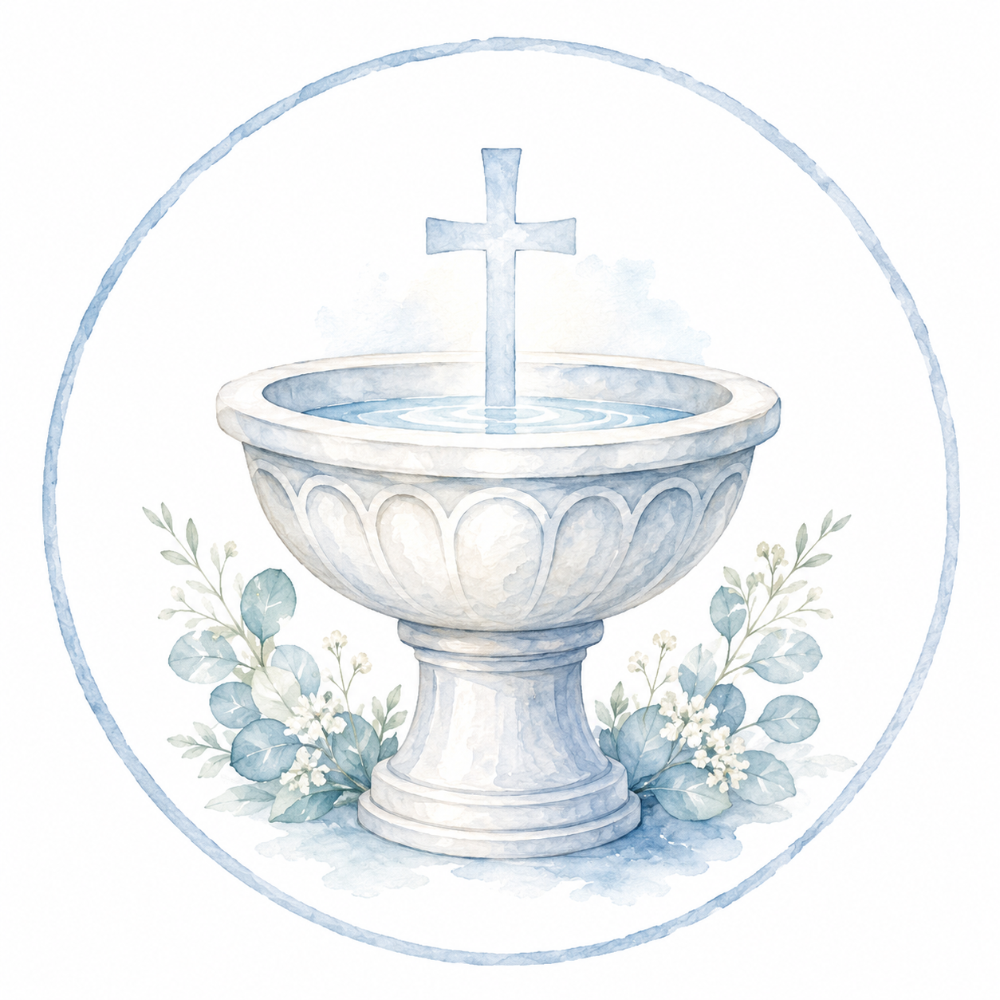

SACRAMENTOS
BAUTISMO
QUE ES?
El Bautismo es el primer sacramento de la vida cristiana. Por medio de él, la persona es incorporada a la Iglesia, nace a la vida nueva en Cristo y queda abierta a la recepción de los demás sacramentos.
La Iglesia lo reconoce como “el fundamento de toda la vida cristiana” y como la puerta de acceso a la vida sacramental.
A través del Bautismo, Dios concede la gracia de ser hijos suyos, perdona el pecado original y hace participar al bautizado de la vida de la comunidad cristiana. Por eso, no se trata solamente de una celebración familiar, sino de un verdadero acontecimiento de fe para toda la Iglesia.
QUIENES PUEDEN RECIBIRLO?
Cualquier persona no bautizada puede recibir el bautismo. No hay límites de edad. Tampoco es limitante que los padres no estén bautizados o casados.
COMO SE PUEDE EN NUESTRA PARROQUIA?
Consultar en secretaría parroquial para conocer los requisitos, fechas disponibles y preparación previa.
